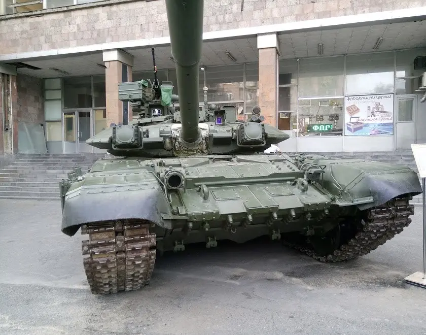

| T-90 | |
|---|---|
|
 |
Datos generalesPaís: Rusia Año: 1992 Tripulación: 3 |
EspecificacionesPeso: 46,5 toneladas Motor: V-84MS, diésel V12, 840 hp Velocidad máxima: 60 km/h |
|
ArmamentoCañón principal: 2A46M de 125 mm Ametralladoras: 1 × PKT de 7,62 mm y 1 × NSVT de 12,7 mm Municion empleada
|
|
El T-90 fue un tanque de batalla principal desarrollado en la Unión Soviética durante los últimos años de la Guerra Fría y posteriormente producido por Rusia. Su desarrollo estuvo relacionado con la búsqueda de un vehículo que pudiera complementar y sustituir progresivamente a diferentes variantes de los T-72 y T-80.
El diseño se basó principalmente en el T-72B, incorporando mejoras en protección, sistemas de control de tiro y otros equipos. El prototipo fue conocido inicialmente como Object 188 antes de recibir la designación T-90.
El T-90 conservó varias características de los tanques soviéticos anteriores, incluyendo el cargador automático y el cañón de 125 mm. Estas características permitieron mantener una tripulación de tres personas y una silueta relativamente baja.
La producción del T-90 comenzó a principios de la década de 1990 en Uralvagonzavod, ubicada en Nizhni Taguil, Rusia. El primer modelo de producción entró en servicio con las fuerzas armadas rusas en 1992.
Durante sus primeros años, la producción fue relativamente limitada debido a las dificultades económicas que siguieron a la disolución de la Unión Soviética. Posteriormente, el T-90 se convirtió en uno de los principales tanques rusos destinados tanto al servicio nacional como a la exportación.
El T-90 tuvo sus primeras experiencias importantes en combate durante las operaciones rusas en Chechenia. Diferentes vehículos fueron empleados durante las campañas de la década de 1990 y principios de la década de 2000.
Posteriormente, diferentes versiones del T-90 fueron utilizadas por fuerzas extranjeras en conflictos de Oriente Medio. Las fuerzas sirias utilizaron T-90 durante la Guerra Civil Siria, mientras que otros operadores extranjeros emplearon el vehículo en diferentes operaciones.
El T-90 y sus diferentes variantes han participado en diversos conflictos: